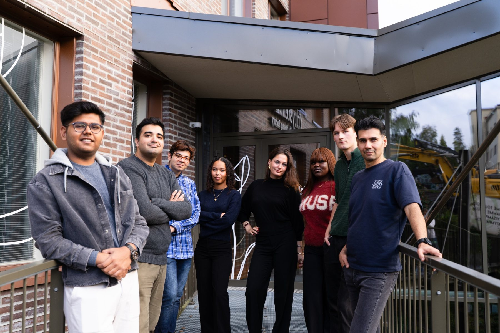
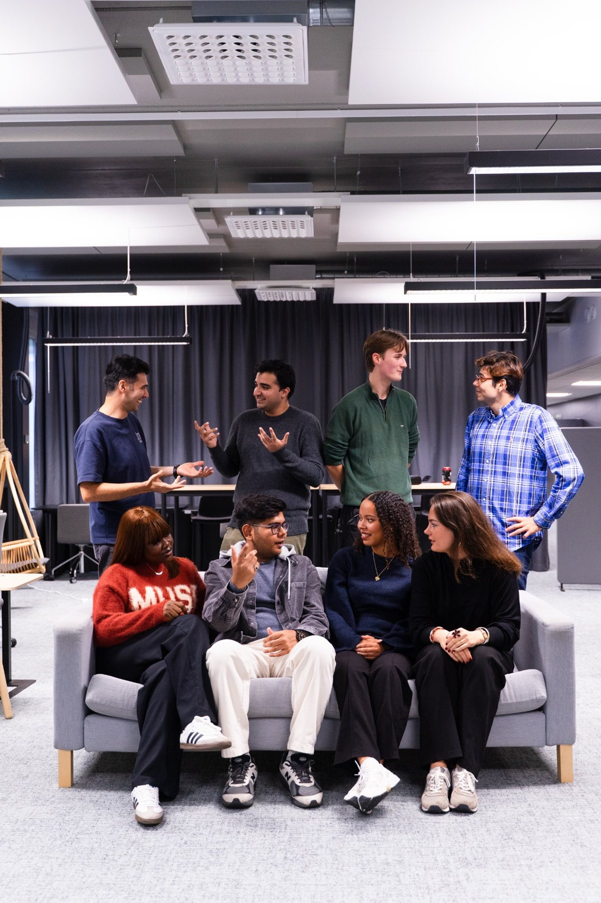
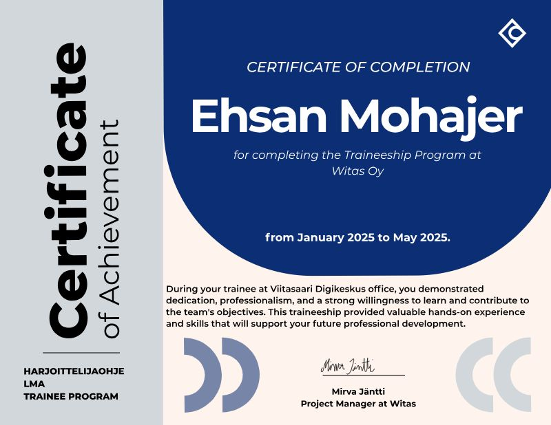
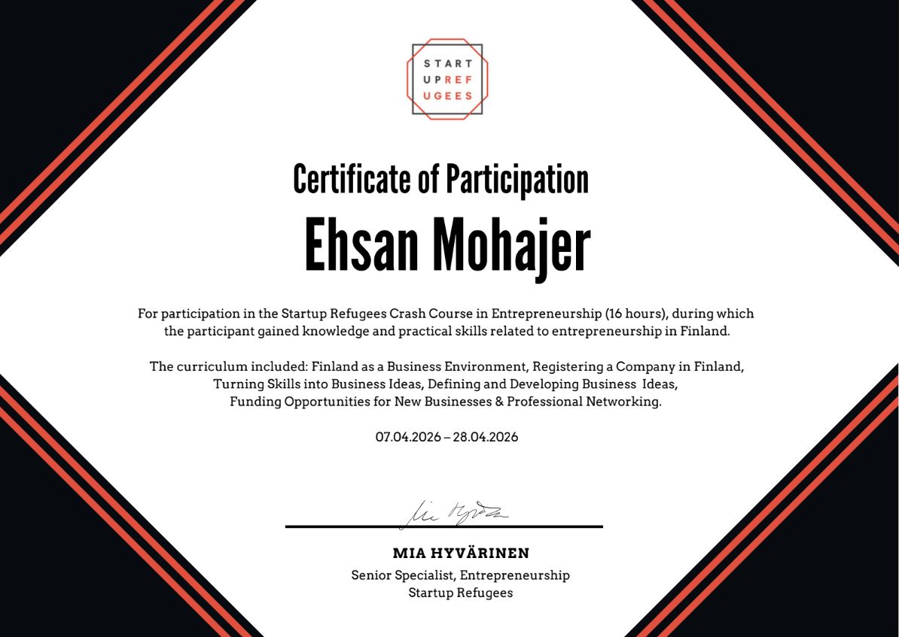

10.2026
Entrepreneurship · A new chapter
In October 2026, I started my entrepreneurial journey, opening a new chapter in my life.
02 / EXPERIENCE
My experience spans software development, project delivery, an unpaid ecosystem partnerships role, and volunteer mentoring through International House Jyväskylä.
In October 2026, I started my entrepreneurial journey, opening a new chapter in my life.
Contributing in an unpaid capacity to develop connections between startups, researchers, universities, investors and mentors in the Finnish deep-tech ecosystem.
Project planning and coordination, regional innovation, hackathons, business outreach, mentoring and digital product initiatives in Viitasaari.
Graduated on 4 June 2026 from the Master’s Degree Programme in Information Technology, Full Stack Software Development (60 ECTS). Thesis: Designing and Developing TrioTalk: An AI-Powered Language Exchange Application for the Finnish Market.
Mentored international professionals through the MILEstone project at International House Jyväskylä, supporting career development, networking and professional integration.
Completed the Witas Oy traineeship programme at Viitasaari Digikeskus, gaining hands-on experience before continuing into my Project Specialist role.
View completion certificate ↗Experience in computer and mobile repair, websites, ecommerce, networking, customer relations and sales.
PARTNERSHIPS & INNOVATION
As a Partnerships Coordinator in an unpaid role at Spinout, I contribute to ecosystem connections among startups, researchers, universities, investors and innovation stakeholders.
My focus is relationship-building, understanding shared interests and supporting opportunities for collaboration in the Finnish deep-tech ecosystem.
Explore Spinout on LinkedIn ↗

Building connections across startups, research and the innovation community.
Listening to different perspectives and finding shared opportunities.
Supporting a people-first approach to deep-tech innovation.
DOCUMENTED EXPERIENCE
Selected evidence of my professional contributions, event organisation, practical training and continuous learning. The certificates below complement the projects and experience described above.

Witas Oy · May 2025
Recognition of professional contributions and practical learning at Viitasaari Digikeskus, January–May 2025.
View certificate ↗
JAMK Talent Boost & Witas Oy · 8 May 2025
Recognised for helping plan and host the Viitasaari AI Hackathon. Read the case study.
View certificate ↗
Startup Refugees · April 2026
16 hours covering the Finnish business environment, company registration, business development, funding and networking.
View certificate ↗Artificial intelligence
AI fundamentals, practical applications and ethical considerations. Certificate records are available in my GitHub repository.
View certificate repository ↗Aalto University · Finland MOOC
Course covering machine learning, neural networks and responsible AI. Exact certificate name and overlap with Elements of AI should be verified.
View certificate repository ↗An open online course exploring Finnish academic culture, higher education and student life.
View certificate repository ↗
Professional profile
Choose the English or Finnish version of my updated professional résumé. Both include my latest contact details, completed JAMK degree, Spinout experience and MILEstone mentoring.
SPEAKING & MENTORING
Through the MILEstone project at International House Jyväskylä, I volunteered as a mentor, supporting international professionals with career direction and networking. I also share lessons from my path into technology and entrepreneurship.
Invite me to speak to your students, community or event audience about my journey and the lessons I have learned along the way.
Send me a request with your event details, audience, preferred date and budget. I will get back to you to discuss a suitable talk.
Speaking fees are negotiable based on your budget and the scope of the event.
Send a speaking request ↗SOLUTIONS FOR YOUR BUSINESS
Need a website, a digital tool or a smarter way to work? Hire me to develop a solution for your business, or explore my services at Tech Jyvä.